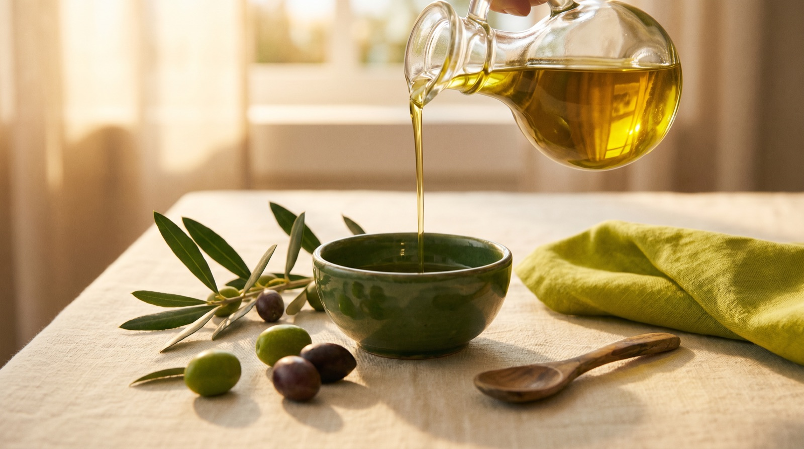

Comprendre ce qu'on mange vraiment

Nutrition
Sucre caché : les 10 produits marocains qui en contiennent le plus
Additifs
E322, E471, E102… le décodeur des additifs les plus fréquents
Ce que dit la science sur les 15 additifs qu'on croise chaque jour dans nos rayons.

Terroir
Huile d'olive marocaine : comment reconnaître la vraie qualité
Beldia, Picholine… le guide pour choisir une huile d'olive à la hauteur de nos traditions.

Coach
Équilibrer ses ftours : 7 réflexes simples qui changent tout
Des ajustements concrets, sans renoncer au plaisir — validés par notre coach IA.